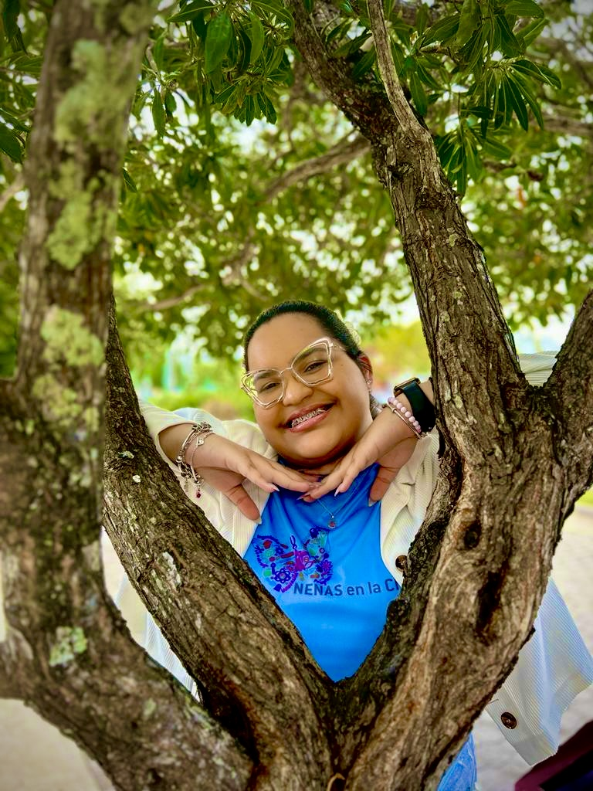

Empoderando a las mujeres en STEAMS
Fomentando la equidad de género en las ciencias, tecnología, ingeniería, artes, matemáticas y deportes.
Sobre mí

Hola soy Zarimar Torres Bayona, Nací en Ponce, Puerto Rico. He tenido el honor de ser aceptada en programas destacados como Semillas de Triunfo este fue el primer programa que me brindó la oportunidad de conocer y desarrollar un proyecto que llame “Science and Technology” como respuesta a las dificultades enfrentadas durante los temblores y la pandemia. Este proyecto tuvo un impacto significativo en mis compañeros, enseñándoles sobre nuevas tecnologías , métodos científicos y ayudándoles a adaptarse a la educación virtual. Gracias a mi dedicación y al apoyo de mi maestra de ciencias este club se ha convertido en una organización estudiantil en mi academia.
L’Oreal Science y Science and Heels me brindó la oportunidad de participar en la primera edición de Puerto Rico llevando conmigo una serie de enseñanza, madures el poder conocer mujeres y mentoras increíble dando todo por nuestro país y generación dejando muy en claro que en este mundo ahí espacio para todas.
El Programa de Latinas in STEAM Accesos Universitarios, que orienta a chicas sobre el proceso de aplicación a universidades en Estados Unidos.
Participo en diversas organizaciones como Codepillars donde las jóvenes se desarrollan como emprendedoras en ciencia, investigación y tecnología fui líder del equipo realizando un prototipo para limpiar el agua de río, convirtiéndola en agua limpia destilada.
Realizó una investigación sobre los manglares utilizando dos tipos de siembras distintas y actualmente estoy investigando el mangle rojo en la reserva natural de Punta Cuchara en Ponce.
Tuve la oportunidad de competir LUMA el EVE Challenge obteniendo el primer lugar junto a mi grupo, participé en el programas como Futuros Físico UPR Humacao, NextGen Scholars (Liberty), TechWomen: liderazgo en acción, SOWCoders Colombia Opportunities y Taino Coding Tribe.
Soy vicepresidenta del club LEO Flaterlaurus y fui miembro de los clubes de psicología escolar, cooperativa escolar y vivero escolar he participado en actividades como oratoria, certamen escolar de dibujo en la semana de historia y matemáticas, asistente en competencias de robótica, ujier en el talent show escolar y asistente en la casa abierta en el área de enfermería. Soy una joven Girl Scout Senior ganando los reconocimientos más alto medallas de bronce, plata y miembro de Jóvenes Emprendedores una organización contra el cáncer.
Me describo como una persona con una gran curiosidad a las nuevas cosas o a lo desconocido siempre existe en mi el ¿Porqué? Valoro el respecto a la vida y disfruto ayudar a los demás. Reconozco la importancia del esfuerzo para lograr sus metas y valoro enseñar a otros lo positivo de la vida en medio de las dificultades. Todos tenemos espacio en este mundo tan maravilloso. Disfruto mucho las arte como un medio de expresión. Somos jóvenes y mujeres de cambio. Se como las luciérnaga luz de esperanza para ti ámate para que puedas amar y dar luz a los que están a tu alrededor…
Sobre Nosotros
Somos una organización dedicada a promover la justicia de género en los campos de STEAMS. Nuestro objetivo es derribar las barreras que impiden la participación equitativa de las mujeres y fomentar un entorno inclusivo y diverso.
Enfocamos nuestros esfuerzos en empoderar a jóvenes para que se interesen y se desarrollen profesionalmente en STEAMS, proporcionando mentorías, capacitaciones y eventos que promueven oportunidades igualitarias.
Misión
Nuestra misión es fomentar la equidad de género en STEAMS, promoviendo la inclusión, la diversidad y la igualdad en el campo de la tecnología, la ingeniería, la ciencia, la matemática y el deporte. A través de nuestro trabajo, buscamos fomentar la creatividad, la innovación y la inclusión. Más colaborar y trabajar en conjunto con otras organizaciones de STEAMS para compartir recursos y conocimientos, mejorando el impacto asi nuestras sociedades.
Programas
Mentorías
Ofrecemos programas de mentoría para apoyar a mujeres jóvenes en su desarrollo profesional en STEAMS.
Capacitaciones
Organizamos talleres y capacitaciones en diversas áreas de STEAMS para equipar a las mujeres con las habilidades necesarias.
Eventos
Realizamos eventos para crear redes de apoyo y visibilizar el trabajo de las mujeres en STEAMS.
Recursos
Proporcionamos una variedad de recursos para ayudar a las mujeres a avanzar en sus carreras en STEAMS, incluyendo artículos, investigaciones y materiales educativos.
Contacto
Email:rompiendobarrerasensteams@gmail.com
Unirse
¿Interesada en unirte a nuestra causa Haz clic aquí para llenar el formulario de inscripción.